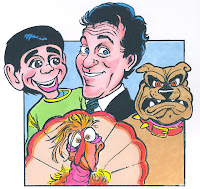

Know Your Audience
4/9/2009
{kind=link}

By Joe Gandelman
There are different ways you can know your audience.
One of the key ways is common sense: Ask Questions. If you're doing a school assembly, make sure you ask the grade levels. Will the group be mixed at random? You would do a school show with grades 5 or 6 mixed differently than you'd do one that would be for K-3, or 4-6. Depending upon your content and style, if you have a standard prepared program for a K-8 audience, you would want to adjust your program if you were booked for an audience of 7th and 8th graders only.
When a client calls about shows for adults, ask some questions. The size. The kinds of people in the audience. Their professions. Male/Female/Mixed? I once referred an entertainer to a client who was Jewish Orthodox during the holiday of Passover. They called back later furious at the entertainer. He performed dramatic characters and one of them was eating bread on stage (a "no-no" during Passover). He also grabbed onto the hand of one woman and insisted on dancing with her (another "no-no"). I had told him about the group, but he went ahead and did his thing. They didn't want to pay him. He failed to take care to "know his audience".
If you're a vent who uses show content more "adult" than "G" or "PG", you'll be in for big trouble. A show containing "R" or "X" material is the riskiest kind of show, in both show business, and for many moral reasons. If you do a corporate show with "R" content, for example, the client will spread the word that you're too off color. I customize my adult shows and corporate shows by having the client answer a lot of questions first.
Let me tell you about my weirdest show where I knew my audience. A call came to me at 10 a.m. from a doctor requesting a surprise party at 12 noon at a hospital in Southern California. He asked for a 15 minute show because they had little time. And I had little time to prepare for the show. I quickly learned that the guest of honor was a surgeon and got a few additional tidbits about him.When I arrived, I was ushered into a small lounge. The doctors showed up in their scrubs, on a break from surgery, ready for the surprise party show. I mixed in some references to doctors and surgeons. I changed one of my characters to be aimed specifically at the guest of honor, using the tid-bit information I was given in advance. They roared throughout...and when 15 minutes had elapsed, they nodded to each other.. and all went back in the operating room. I packed my buddies and went home with that wonderful feeling of satisfaction that comes from doing a show where you’ve taken care to learn to "know your audience" in advance!
Newsy Vents 11/05